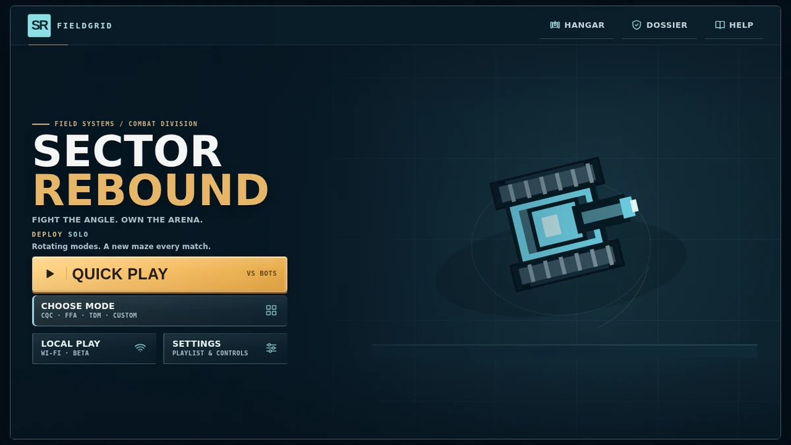
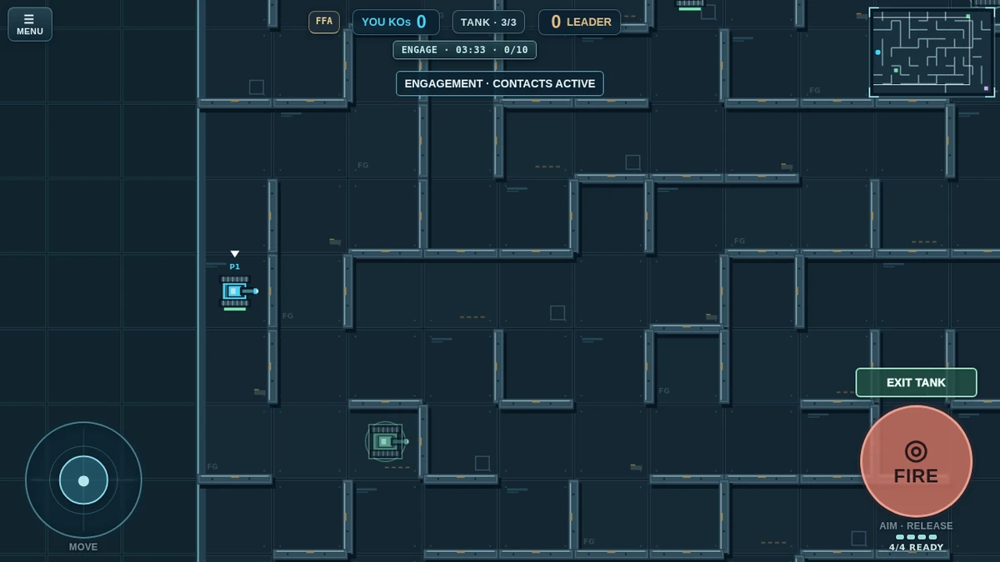
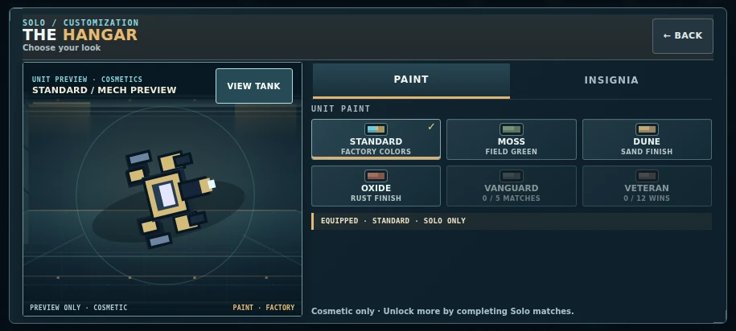
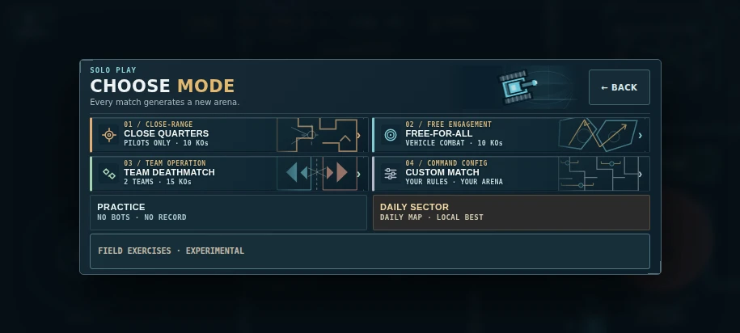

In development · Spudacus
Sector Rebound
Make every bank shot count.
An Android-first tactical arcade ricochet game in development.

Inside Sector Rebound



Pilot, tank and mech combat, solo practice and experimental nearby multiplayer are development directions. Local multiplayer remains under testing.
Availability and help
In development. Release availability is not announced. Features may change.